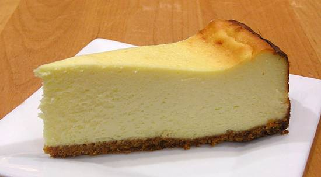

New York Style Cheesecake
Deze Amerikaanse Cheesecake kun je van tevoren maken en tot gebruik in koelkast bewaren.
Ingrediënten
- 150 gram koekkruimels
- 75 gram gesmolten boter
- 570 gram creamcheese
- 170 gram suiker
- 20 gram bloem
- 75 gram zure room
- 3 eieren
- 1 vanillestokje (of 1 zakje vanillesuiker)
Bereidingswijze
- Meng de kruimels met de gesmolten boter en druk dit stevig aan op de bodem van een ingevette springvorm van 24 cm doorsnede
- Roer de creamcheese goed glad met de suiker
- Voeg bloem, zure room, ei en vanille (vanillestokje opensnijden en het merg met de punt van het mes eruit schrapen) en meng alles tot een gladde massa
- Giet deze massa in de springvorm en strijk de bovenkant glad.
- Bak de cheesecake 60 minuten in een voorverwarmde oven bij 130 graaden Celsius. Niet hoger want dan krijg je scheuren in de cake.
- Laat de cheesecake goed afkoelen na het bakken
